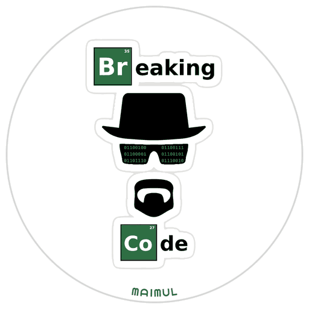

About me
I'm a Cloud & Infrastructure Engineer working at the intersection of solution architecture, platform engineering, and software delivery.
My work goes beyond infrastructure: I partner with stakeholders to refine requirements, design architectures and workflows, integrate backend services, and lead delivery from design through demo and deployment.
I care most about building systems that are reliable, observable, secure, and practical to operate.

- Solution architecture
- Requirements engineering, system design, integrations, and technical decision-making.
- Cloud & platform engineering
- Kubernetes, OpenShift, cloud infrastructure, networking, and hybrid environments.
- DevOps & automation
- Infrastructure as Code, GitOps, CI/CD, secrets management, and deployment automation.
- Observability & reliability
- Metrics, logs, distributed tracing, and performance optimization.
- AI & intelligent systems
- AI-powered software engineering, agents, and enterprise integrations.
Currently exploring
Agent protocols
MCP, A2UI, AG-UI and A2A for safe, multi-tenant AI assistants.
ARM & edge
On-prem deployments on ARM hardware and self-hosting on single-board computers.
Multi-arch delivery
Building ARM and x86 container images with native GitHub Actions ARM runners.
Compliance-aware SaaS
Modelling real-world regulations, like strata management and e-invoicing, directly into product design.
From the blog
All issues →One thing I figured out, written up like a newspaper feature: what broke, what I thought was going on, what was actually true, with diagrams and the dead ends left in.
-
Every Test Passed. Production Returned 500.
My test suite was green, my smoke test was green, and a photo upload in a FastAPI app I work on had never worked. Here's the Python behaviour that hid it, the test that now catches it, and why fixing the bug still didn't fix the feature.
-
The Case of the Printer Nobody Could Reach
My iPhone could see my home printer, but it hadn't printed a page in 127 days. Here's how I tracked down why, what finally fixed it, and how to check your own setup when AirPrint goes quiet.
-
AirPrint for a Printer That Never Had It
My Epson L3250 doesn't support AirPrint, so my iPhone can't see it. One small container on my Synology NAS fixes that. Here's how it works, and how to set it up for your own printer.
The stack
The tools I reach for, laid out as a periodic table and grouped by what they do.
Cloud & infrastructure
- 1IbIBM Cloud
- 2AzMicrosoft Azure
- 3GcGoogle Cloud
- 4KsKubernetes
- 5OsOpenShift
- 6DkDocker
- 7CfCloudflare
DevOps, automation & GitOps
- 8TfTerraform
- 9HmHelm
- 10ArArgo CD
- 11GaGitHub Actions
- 12VtHashiCorp Vault
Observability
- 13PmPrometheus
- 14GfGrafana
Development & AI
- 15PyPython
- 16FaFastAPI
- 17RnReact Native
- 18ExExpo
- 19McModel Context Protocol
GitHub activity